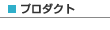

|
 |
|||||
|  | ||||||
注意点
S2AOPリファレンス作成すべきファイルS2AOP を使用するにはS2Container の設定ファイル(diconファイル)で行います。設定ファイルの配置場所は、とくに指定がありませんが、通常「Crosscutting Concern」と同じ場所に配置するか、設定を行うコンポーネントと同じ場所に配置します。 設定ファイルの説明aspectタグ（AOPを使用する場合は必須）アスペクトをコンポーネントに組み込みます。Interceptorの指定は、ボディでPHP式を使うか、子タグでcomponentタグを使います。 注意点aspectタグで指定されたコンポーネントは、コンテナの初期化時にコンテナから取得されます。そのため、aspectタグで指定されたコンポーネントのinstance属性がprototypeだったとしても、Interceptor のメソッドが呼び出される度に新しいインスタンスが作成されるわけではありません。 pointcut属性(任意)カンマ区切りで対象となるメソッド名を指定することができます。pointcutを指定しない場合は、コンポーネントが実装しているインターフェースのすべてのメソッドが対象になります。メソッド名には正規表現も使えます。 設定例pointcut 属性を指定してDateのgetTime()メソッドを対象とする場合以下のようになります。 pointcut属性を指定しない場合はDateが実装しているインターフェースのメソッドが対象になります。 <?php
class Date {
function Date() {}
function getTime(){
return '12:00:30';
}
function getDate(){
return '25';
}
}
?>
正規表現を使ってjava.util.Dateのpublicなメソッドすべてを対象としたい場合は、以下のように設定します。
<component class="Date">
<aspect pointcut=".*">
<component class="S2Container_TraceInterceptor"/>
</aspect>
</component>
S2AOPで用意されているInterceptorS2AOPでは、以下のInterceptorを用意しています。また独自のInterceptorを簡単に作成できるようになっています。 (1) TraceInterceptorクラス名TraceInterceptor 説明トレース処理を「Crosscutting Concern」として扱うためのInterceptorです。DateクラスにTraceInterceptorを適用したdiconファイルは、以下のようになります。対象とするメソッドはgetTime()とします。 <component class="Date">
<aspect pointcut="getTime">
<component class="S2Container_TraceInterceptor"/>
</aspect>
</component>
詳しい使用方法はTraceInterceptorを参照してください。 (2) ThrowsInterceptorクラス名ThrowsInterceptor 説明例 外処理を「Crosscutting concern」として扱うためのInterceptorです。使用するにはThrowsInterceptorを継承し、function handleThrowable(Exception, S2Container_MethodInvocation)を実装するだけです。詳しい使用方法はThrowsInterceptorを参照してください。 (3) MockInterceptorクラス名MockInterceptor 説明Mockを使ったテストを簡単に行うためのInterceptorです。詳しい説明はテスト技法のモックを作成するための設定を参照してください。 (4) DelegateInterceptorクラス名DelegateInterceptor 説明メ ソッド呼び出しを別のコンポーネントに委譲するためのInterceptorです。使用方法はDelegateInterceptorのtargetプロ パティに委譲したい相手を指定します。委譲するときのメソッド名が異なる場合には、 DeleateInterceptor#addMethodNameMap( $methodName, $targetMethodName)で指定します。例えば、bar()というメソッドをfoo->bar2()に委譲する場合、 DeleateInterceptor#setTarget(foo)，DeleateInterceptor#addMethodNameMap ("bar", "bar2")のように指定します。詳しい使用方法はDelegateInterceptorを参照してください。 注意targetプロパティに指定されたコンポーネントは、コンテナの初期化時にコンテナから取得されます。このため、targetプロパティに指定さ れたコンポーネントのinstance属性がprototypeであっても、常に同じインスタンスが使われます。メソッド呼び出しの度に新しいインスタン スをコンテナから取得したい場合は次のPrototypeDelegateInterceptorを使用してください。 (5) PrototypeDelegateInterceptorクラス名PrototypeDelegateInterceptor 説明メ ソッド呼び出しを別のコンポーネントに委譲するためのInterceptorです。メソッド呼び出しの度にコンポーネントをコンテナから取得します。使用 方法はPrototypeDelegateInterceptorのtargetNameプロパティに委譲したい相手の名前を指定します。委譲するときの メソッド名が異なる場合には、PrototypeDeleateInterceptor#addMethodNameMap($methodName, $targetMethodName)で指定します。例えば、bar()というメソッドをfoo->bar2()に委譲する場合、 PrototypeDeleateInterceptor#setTarget(foo)， PrototypeDeleateInterceptor#addMethodNameMap("bar", "bar2")のように指定します。詳しい使用方法はPrototypeDelegateInterceptorを参照してください。 (6) InterceptorChainクラス名InterceptorChain 説明複 数のInterceptorをグルーピング化し、再利用しやすくします。複数のInterceptorの組み合わせを複数コンポーネントに適用する場合 は、InterceptorChainで複数のInterceptor1つにまとめて、各コンポーネントにはInterceptorChainを指定する ようにするといいでしょう。 <component name="interceptor1" .../> <component name="interceptor2" .../> <component name="interceptor3" .../> (7) 独自実装によるInterceptor説明独自にInterceptorを作成する場合は、次のインターフェースまたは、抽象クラスを実装します。
どちらの場合も実装するメソッドは、以下のinvoke()メソッドの１つだけです。
AbstractInterceptor は、MethodInterceptorをimplementsした抽象クラスです。AbstractInterceptorには、Proxyオブジェク トを取得するcreateProxy()メソッドとアスペクトを適用するクラスを取得するgetTargetClass()メソッドがあります。アスペク トを適用したクラス名を必要とするInterceptor(例えば、ログ出力を行うInterceptor)を作成する場合は、 AbstractInterceptorを使用することで簡単にクラス名を取得することができます。
MethodInvocation のgetThis()、getMethod()、getArguments()で対象となるオブジェクト、メソッド、引数を取得できます。proceed()を呼び出すと実際のメソッドが呼び出され実行結果を取 得することができます。以下のような独自のInterceptorを作成したとします。 作成例<?php
class ABS implements S2Container_MethodInterceptor {
public function invoke(S2Container_MethodInvocation $invocation){
print "Before \n"; <-- 呼ぶ前は Before
$ret = $invocation->proceed();
print "After \n"; <-- 呼んだ後は After
return $ret;
}
}
?>
MethodInvocation#proceed()を呼ぶ前と後で2分され、呼ぶ前は Beforeの個所を実行し、呼んだ後はAfterの個所を実行します。1つのコンポーネントに複数のアスペクトが定義されている場合は、以下のよう実行されます。
詳しい使用方法は独自実装によるInterceptorを参照してください。 diconファイルを使用しないでアスペクトを組み込む方法diconファイルの設定を行わずプログラム上でアスペクトを組み込むこともできます。作成方法は次のようになります。
DateクラスにTraceInterceptorをプログラム上で適用する場合は、次のようになります。対象となるメソッドはgetTime()とします。 <?php
$pointcut = new S2Container_PointcutImpl(array("getTime"));
$aspect = new S2Container_AspectImpl(new S2Container_TraceInterceptor(), $pointcut);
$aopProxy = new S2Container_AopProxy('Date', array($aspect));
$proxy = $aopProxy->create();
$proxy->getTime();
?>
Example以下のサンプルを実行する場合は、セットアップを行う必要があります。 TraceInterceptorTraceInterceptor を使用してDateクラスのgetTime()メソッドが呼ばれた場合にトレースを出力させましょう。作成するファイルは以下のとおりです。
diconファイルの作成
Trace.dicon <?xml version="1.0" encoding="Shift_JIS"?>
<!DOCTYPE components PUBLIC "-//SEASAR//DTD S2Container//EN"
"http://www.seasar.org/dtd/components21.dtd">
<components>
<component name="traceInterceptor" class="S2Container_TraceInterceptor"/>
<component class="Date">
<aspect pointcut="getTime">
traceInterceptor
</aspect>
</component>
</components>
実行スクリプトの作成
AopTraceClient.php <?php
require_once(dirname(__FILE__) . '/trace.inc.php');
$PATH = EXAMPLE_DIR . "/aop/traceinterceptor/Trace.dicon";
$container = S2ContainerFactory::create($PATH);
$date = $container->getComponent('Date');
$date->getTime();
?>
実行結果 メソッドが呼ばれる前と後でトレースが出力されているのが確認できます。 % php AopTraceClient.php BEGIN Date#getTime() END Date#getTime() : 12:00:30 % このサンプルは、s2container.php5/examples/aop/traceinterceptor以下に用意されています。 ThrowsInterceptor(1) ThrowsInterceptorを使って、例外が発生した場合でも処理を続けられるようにしましょう。作成するファイルは以下のようになります。
例外を発生させるクラスの作成
Checker.class.php <?php
class Checker {
public function check($str) {
if ($str != null) {
print $str . "\n";
} else {
throw new Exception("null");
}
}
}
?>
ThrowsInterceptorを継承するInterceptorの作成
HandleThrowableInterceptor.class.php <?php
class HandleThrowableInterceptor extends S2Container_ThrowsInterceptor {
public function handleThrowable(Exception $t, S2Container_MethodInvocation $invocation){
}
}
?>
diconファイルの作成
Checker.dicon <?xml version="1.0" encoding="Shift_JIS"?>
<!DOCTYPE components PUBLIC "-//SEASAR//DTD S2Container//EN"
"http://www.seasar.org/dtd/components21.dtd">
<components>
<component name="handleThrowableInterceptor" class="HandleThrowableInterceptor"/>
<component class="Checker">
<aspect pointcut="check">
handleThrowableInterceptor
</aspect>
</component>
</components>
実行ファイルの作成
AopCheckerClient.php <?php
require_once(dirname(__FILE__) . '/throws.inc.php');
$PATH = EXAMPLE_DIR . "/aop/throwsinterceptor/Checker.dicon";
$container = S2ContainerFactory::create($PATH);
$checker = $container->getComponent('Checker');
try{
$checker->check("foo");
}catch(Exception $e){
print "Exception : " . $e->getMessage() . "\n";
}
try{
$checker->check(null);
}catch(Exception $e){
print "Exception : " . $e->getMessage() . "\n";
}
try{
$checker->check("hoge");
}catch(Exception $e){
print "Exception : " . $e->getMessage() . "\n";
}
?>
実行結果 例外で処理が止まっていないことが確認できます。 % php AopCheckerClient.php foo hoge % このサンプルは、s2container.php5/examples/aop/throwsinterceptor以下に用意されています。 (2) 例外を別の例外に変換するInterceptorを作成して変換したメッセージを表示させましょう。作成するInterceptorは、先ほど ThrowsInterceptorを継承して作成したクラス(HandleThrowableInterceptor.class.php)を応用して作成しま しょう 例外を別の例外に変換するInterceptorの作成S2RuntimeExceptionを発生させてメッセージを変更します。 <?php
class HandleThrowableInterceptor extends S2Container_ThrowsInterceptor {
public function handleThrowable(Exception $t, S2Container_MethodInvocation $invocation){
throw new S2Container_S2RuntimeException("ESSR0007", array("arg"));
}
}
?>
先ほど作成した実行ファイルを使って実行します。 実行結果エラーメッセージが変わっているのが確認できます。 % php AopCheckerClient.php foo Exception : arg should not be null or empty hoge % このサンプルは、s2container.php5/examples/aop/throwsinterceptor以下に用意されています。 DelegateInterceptorS2AOPで用意されているDelegateInterceptorを使って、他のクラスのメソッドに委譲させましょう。
インターフェースの作成
IBase.class.php <?php
interface IBase {
public function run();
}
?>
インターフェースを実装した抽象クラスの作成
Dummy.class.php <?php
abstract class Dummy implements IBase {
}
?>
インターフェースを実装したクラスの作成
Substance.class.php <?php
class Substance implements IBase{
public function run() {
print "substance\n";
}
}
?>
diconファイルの作成
Delegate.dicon <?xml version="1.0" encoding="Shift_JIS"?>
<!DOCTYPE components PUBLIC "-//SEASAR//DTD S2Container//EN"
"http://www.seasar.org/dtd/components21.dtd">
<components>
<component class="Dummy">
<aspect>
<component class="S2Container_DelegateInterceptor">
<initMethod name="setTarget">
<arg>new Substance()</arg>
</initMethod>
</component>
</aspect>
</component>
</components>
実行ファイルの作成
<?php
require_once(dirname(__FILE__) . '/delegate.inc.php');
$PATH = EXAMPLE_DIR . "/aop/delegateinterceptor/Delegate.dicon";
$container = S2ContainerFactory::create($PATH);
$base = $container->getComponent('Dummy');
$base->run();
?>
実行結果 コンソールに"substance"と表示されているのでDummy#run()がSubstance#run()に委譲されているのが確認できます。 % php AopDelegateCilent.php substance % このサンプルは、s2container.php5/examples/aop/delegateinterceptor以下に用意されています。 PrototypeDelegateInterceptorS2AOPで用意されているPrototypeDelegateInterceptorを使って、singletonのコンポーネントからprototypeのコンポーネントのメソッドに委譲させましょう。
インターフェースの作成
IBase.class.php <?php
interface IBase {
public abstract function run();
}
?>
インターフェースを実装した抽象クラスの作成
Dummy.class.php <?php
abstract class Dummy implements IBase {
}
?>
インターフェースを実装したクラスの作成
Substance.class.php <?php
class Substance implements IBase{
private $sum = 0;
public function run() {
print "sum : " . $this->sum . "\n";
$this->sum++;
}
}
?>
diconファイルの作成
PrototypeDelegate.dicon <?xml version="1.0" encoding="Shift_JIS"?>
<!DOCTYPE components PUBLIC "-//SEASAR//DTD S2Container//EN"
"http://www.seasar.org/dtd/components21.dtd">
<components>
<component class="Dummy">
<aspect>
<component class="S2Container_PrototypeDelegateInterceptor">
<property name="targetName">"target"</property>
</component>
</aspect>
</component>
<component name="target" class="Substance" instance="prototype"/>
</components>
実行ファイルの作成
<?php
require_once(dirname(__FILE__) . '/prototype.inc.php');
$PATH = EXAMPLE_DIR . "/aop/prototypedelegateinterceptor/PrototypeDelegate.dicon";
$container = S2ContainerFactory::create($PATH);
$base = $container->getComponent('Dummy');
for ($i = 0; $i < 5; ++$i) {
$base->run();
}
?>
実行結果 コ ンソールに"sum : 0"と表示されているので Dummy#run()がSubstance#run()に委譲されているのが確認できます。また、sumの値がすべて"0"となっていることから，run()メソッドを呼び出すたびに新しいSubstanceのインスタンスが作成されていることが分かります。 % php AopPrototypeDelegateCilent.php sum : 0 sum : 0 sum : 0 sum : 0 sum : 0 % このサンプルは、s2container.php5/examples/aop/delegateinterceptor以下に用意されています。 独自実装によるInterceptorクラス名、メソッド名、引数とメソッドの処理時間を計測してトレースするInterceptorを作成しましょう。また、そのInterceptorを使用して重い処理を行った時間をトレースさせましょう。作成するファイルは以下のとおりです。
独自実装のIntercepterの作成
MeasurementInterceptor.class.php <?php
class MeasurementInterceptor extends S2Container_AbstractInterceptor {
public function invoke(S2Container_MethodInvocation $invocation){
$start = 0;
$end = 0;
$buf = "";
$buf = $this->getTargetClass($invocation)->getName();
$buf .= "#";
$buf .= $invocation->getMethod()->getName();
$buf .= "(";
$args = $invocation->getArguments();
$buf .= implode($args) . ")";
try {
$start = $this->microtime_float();
$ret = $invocation->proceed();
$end = $this->microtime_float();
$buf .= " : ";
$t = $end - $start;
print $buf . $t . "\n";
return $ret;
} catch (Exception $t) {
$buf .= " Exception:";
$buf .= $t->getMessage();
throw $t;
}
}
private function microtime_float() {
list($usec, $sec) = explode(" ", microtime());
return ((float)$usec + (float)$sec);
}
}
?>
重い処理を行うクラスの作成
HeavyProcess.class.php <?php
class HeavyProcess {
public function heavy(){
sleep(5);
}
}
?>
diconファイルの作成
Measurement.dicon <?xml version="1.0" encoding="Shift_JIS"?>
<!DOCTYPE components PUBLIC "-//SEASAR//DTD S2Container//EN"
"http://www.seasar.org/dtd/components32.dtd">
<components>
<component name="measurement" class="MeasurementInterceptor"/>
<component class="HeavyProcess">
<aspect pointcut="heavy">
measurement
</aspect>
</component>
</components>
実行ファイルの作成
AopMeasurementClient.php <?php
require_once(dirname(__FILE__) . '/original.inc.php');
$PATH = EXAMPLE_DIR . "/aop/originalinterceptor/Measurement.dicon";
$container = S2ContainerFactory::create($PATH);
$heavyProcess = $container->getComponent('HeavyProcess');
$heavyProcess->heavy();
?>
実行結果 クラス名、メソッド名、引数とメソッドの処理時間がトレースされているのが確認できます。 % php AopMeasurementClient.php HeavyProcess#heavy() : 5.0025010108948 % このサンプルは、s2container.php5/examples/aop/originalinterceptor以下に用意されています。 |
||
| © Copyright The Seasar Project and the others 2004-2005, all rights reserved. |